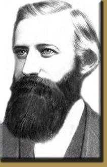

John Whittier Treat, “Orientalia, Bibliophilia, Fetish: The Erotics of the Collecting Asia”

John Whittier Treat was raised and schooled in New England but has spent most of his adult life living in the Pacific Northwest and Asia. He currently teaches at Yale. He is the author of several book-length works of criticism, one novel, a memoir and many short stories. Treat is at work on a new novel, entitled Walk Run Crawl.
John Whittier Treat
Sunday, September 29, 2013
John Whittier Treat, “Orientalia, Bibliophilia, Fetish: The Erotics of the Collecting Asia”
I begin with fanciful biographies of Horace Walpole Carpentier (1824-1918) and Dean Lung (18??-19??), the well known "General and the Valet" who were early benefactors of the Chinese book collection at Columbia University. I will speculate further on the probable role of mimetic and sexual desires in the collection of East Asian texts and artwork in Western homes and institutions, supplemented today by the reach of the worldwide web. I will refer to works by Walter Benjamin, Roger Casement, Susan Stewart and Edmund de Waal in my presentation.